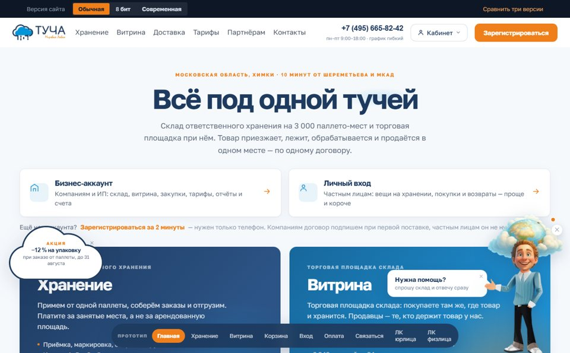
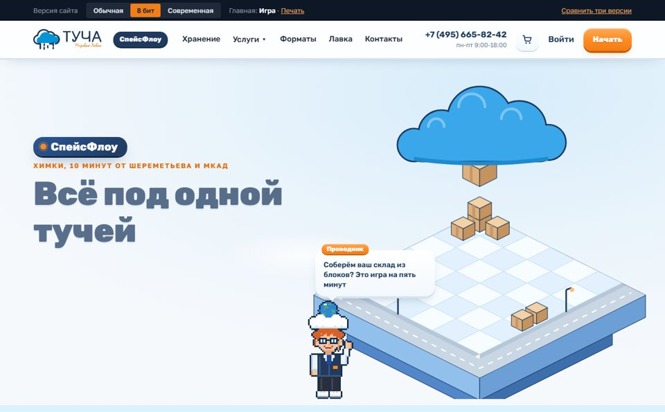
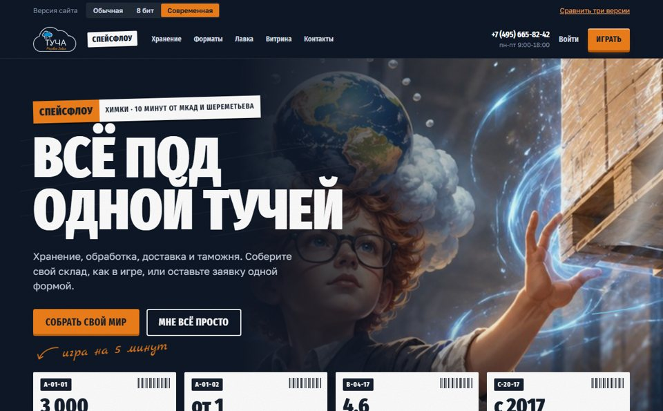

ОбычнаяКлассический сайт: услуги, цены, калькулятор, Витрина и кабинеты. Без игры.Открыть
8 битИгровой в пиксельном стиле: мир собирается из блоков, Проводник 8 бит, два формата работы.Открыть
СовременнаяИгровой в стилистике склада: стеллажи, крафт-короба, адресные ярлыки, тонкие линии энергии.Открыть